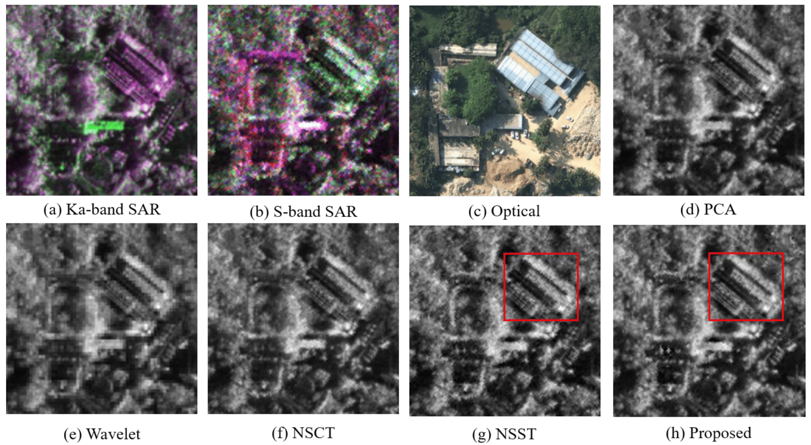
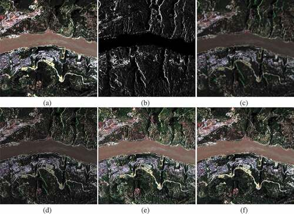
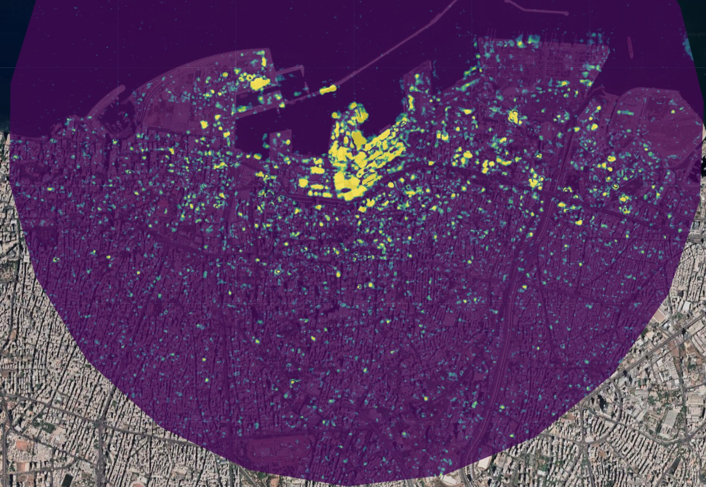

8 week9-SAR
8.1 Summary
This week is about learning about a specific remote sensing product and its application, Synthetic Aperture Radar (SAR), which is an active remote sensing technique that uses radar to create two-dimensional images or three-dimensional reconstructions of objects. It has several characteristics:
8.1.1 Features and Benefits
| Feature and benefit | Definition |
|---|---|
| Active Sensor | Unlike passive sensors that rely on sunlight, the SAR comes with its own light source. Images can be acquired at any time or season |
| Surface texture data | Thanks to its high-resolution capabilities, SAR can detect fine details about the surface texture |
| Cloud penetration | SAR can penetrate weather and clouds because radar wavelengths can penetrate atmospheric conditions that block optical sensors |
| Wavelength Variation | Different wavelengths (L, C, S, X, Ku, K and Ka bands) are used for various applications. The wavelength determines the depth of penetration and resolution of the image |
8.1.2 Working Principle
Due to the special way in which SAR transmits and acquires radar signals, it has specialised terminology, which belongs to and reflects the principles of its operation:
| Term | Interpretation |
|---|---|
| Backscatter(Amplitude) | This refers to the strength of the signal reflected back to the radar antenna from the surface, and can provide information about the characteristics of the ground being illuminated, such as surface roughness, humidity and vegetation type. It is directly related to the surface characteristics and also to the polarisation state of the radar wave. |
| Polarization | The direction of electromagnetic wave vibration when radar waves are transmitted and received. Radar systems can transmit and receive waves with different polarisations, which is called polarisation diversity (Ruan et al. 2011). Polarisation can directly affect backscatter, the amplitude of backscatter is affected by the scattering mechanism, and different surface types (water, bare soil, vegetation) respond differently to radar waves of different polarisation states. Also the information richness of backward scattering can vary depending on the polarisation used. |
| Dielectric constant | A measure of the ability of a substance to transmit electricity without conduction. It affects how radar signals are scattered and so is also directly related to Backscatter. |
| Phase | Refers to the position of a wave in its cycle as it returns to the sensor and is critical to interferometry (Zhang et al. 1998). |
8.1.3 Processing flow
After learning the basic principles and terminology of SAR, we step by step understand the basic process of processing SAR data:
| Step | Interpretation |
|---|---|
| Determine the I and Q values | Contains the real part (I) and imaginary part (Q), which represents the In-phase (In-phase) and Quadrature (Quadrature) pairs, used to characterise the complex form of the received electromagnetic wave. |
| Generation of visual image (amplitude) | Ground Range Detected (GRD) is used. In Google Earth Engine (GEE), this is achieved by squaring and root-checking the I and Q values of the Single Look Complex (SLC) to calculate the reflected intensity (backscatter). |
| Storage of values | Backscatter values can be stored as power, amplitude or decibels (dB). These are suitable for statistical analysis, visualisation and identification of differences in dark areas (e.g. water bodies) respectively. |
| Averaging of multiple images | Noise in SAR images is caused by uneven scattering and can be smoothed by averaging multiple images. |
In practice, processing SAR data for change detection takes into account both the statistical and noise properties of the images. It is often necessary to collect data at multiple time points and use statistical methods to assess the significance of changes (e.g. the standard distribution may only apply to the difference image and not the original image (Canty 2019)). It is also necessary to use classification thresholds to optimise the accuracy of change detection and to validate the results with ROC curves. In some cases, image fusion techniques such as combining the intensity of the SAR data with the hue and saturation of the optical image (classified as decision-level fusion, object-level fusion, and image fusion depending on the layer used and the object generated) will also be utilised to improve the visualisation of change detection.
8.2 Applications
This course demonstrates the benefits of SAR data, reflecting a wide range of potential application scenarios. However, it is a fact that SAR images are poor in target identification and band information (Li et al. 2022). Therefore, researchers usually fuse SAR images with other remote sensing images for better visual performance and additional valuable information, which are mainly divided into: 1. fusion between SAR images; 2. fusion with optical images; 3. and also fusion with other data.
Fusion between SAR images can obtain more band and polarisation information (Zhang et al. 2022). Li et al. (Li et al. 2022) used the non-subsampled shear transform (NSST) to fuse the decomposed subband images through the coefficient of variation and phase consistency weighted fusion rules, and proceeded to the fused images based on the extracted band and polarisation information, which was found to retain more valuable information as well as being easy to interpret. This study also highlights the NSST method with PCA fusion and wavelet fusion and other fusion methods mentioned in the classroom image fusion methods that can visualise the differences between the different methods.

Since the imaging modes of SAR and optical images are different, Chu et al. (Chu et al. 2020) also used NSST and an improved SAR optical image fusion algorithm to avoid the usual problems of spectral distortion and excessive noise introduction in the fused image, and smoothly integrate the SAR image into the optical image. In fact, the application of SAR and optical images is more practical and can be widely used in diverse fields such as urban built-up area research (Teimouri, Mokhtarzade & Valadan Zoej 2016), agricultural cultivation research (Liu et al. 2019), glacier ecological monitoring (Shah, Jayaprasad & James 2019), and so on.

In class the instructor also showed a case study combining SAR data with statistical data (Open Access Damage Detection Using Sentinel-1 Imagery). The project utilised a combination of statistical tests such as SAR and ground truth data, using a pixel t-test to determine if the pixels had changed significantly since the Beirut bombing. The effectiveness of the algorithm was demonstrated by combining SAR image changes with UN losses in the placebo test. This fully demonstrates the advantages of SAR to be able to perform the mission of detailed change detection in disaster scenarios.

Based on the above applications, I believe that the joint use of optical and SAR remote sensing data in the future, the application of multi-band multi-dimensional SAR has been the trend of the application of this product, and at the same time, because of its working mechanism that is not affected by the weather time conditions, it is very important for the finer and long time monitoring tasks.
8.3 Reflection
Up to this point, we have learnt about everything from understanding remote sensing data, to pre-processing, to using GEE for some simple classification, and then this week furthering our understanding of a specific remote sensing product, SAR.
In this chapter, the benefits of SAR, such as the high resolution capabilities and the ability to operate year round, were specifically demonstrated, and the instructor also brought the benefits of the product to life through a specific case study of the Beirut bombing. Among them, I was amazed by SAR’s outstanding performance in terms of high accuracy. For example, in the study (Ballinger & Donchyts 2023) mentioned by the professor, the damage to the buildings in the city damaged during the war in Ukraine was monitored using the pixel dimension T-test algorithm, and at the same time it was able to generate a real-time map of the damage, and this real-time monitoring function and level of refinement was breathtaking to me.
As the teacher threw out the question, “SAR is very useful because it can penetrate the clouds, unlike optical sensors (e.g. Landsat), but how is it useful for our analysis?” In the example above it is illustrated that the use of SAR means that monitoring models can be deployed almost anywhere on the planet regardless of atmospheric conditions and time of day, as well as ingesting new imagery in a timely and increasingly accurate manner, which I think is extremely helpful for disaster prevention and mitigation, post-disaster post-war monitoring, and ecological monitoring applications.
I am also concerned that SAR is also capable of monitoring the growth of agricultural crops over the entire climatic period, and by combining it with optical data, it can realise effective monitoring of agricultural targets. I think this technology is particularly important for the agricultural development of my home country China, which, as a large agricultural country, has a great demand for precision agriculture, and I can hope to apply remote sensing technology to enhance the development of the agricultural economy. I also hope to apply remote sensing technology to enhance the development of agricultural economy.
After a semester of Remotely Sensing Cities and Environments, I have slowly gained a new understanding of this field from a beginner in remote sensing, and have learnt about the concrete usefulness and infinite possibilities of remote sensing for the real society. I hope that in the future remote sensing technology will be known to more people and become a technology integrated into everyone’s life. I would like to thank the teacher for his careful preparation of this course and hope that the Earth will become better!
8.4 References
Ballinger, D.O. & Donchyts, D.G., 2023. A New Algorithm for Persistent Building Damage Detection in Synthetic Aperture Radar Imagery.
Canty, M.J., 2019. Image Analysis, Classification and Change Detection in Remote Sensing: With Algorithms for Python, Fourth Edition. 4. udgave. Boca Raton: CRC Press.
Chu, T. et al., 2020. Novel fusion method for SAR and optical images based on non-subsampled shearlet transform, International Journal of Remote Sensing. Taylor & Francis, årg. 41, nr. 12, s. 4590–4604.
Li, X. et al., 2022. Multi-Band and Polarization SAR Images Colorization Fusion, Remote Sensing. Multidisciplinary Digital Publishing Institute, årg. 14, nr. 16, s. 4022.
Liu, C. et al., 2019. Research advances of SAR remote sensing for agriculture applications: A review, Journal of Integrative Agriculture, årg. 18, nr. 3, s. 506–525.
Ruan, X. et al., 2011. Performance Experiment of Classification Using Chinese Airborne Multi-Band and Multi-Polar SAR Data [Online]. Tengchong, Yunnan, China: IEEE.
Shah, E., Jayaprasad, P. & James, M.E., 2019. Image Fusion of SAR and Optical Images for Identifying Antarctic Ice Features, Journal of the Indian Society of Remote Sensing, årg. 47, nr. 12, s. 2113–2127.
Teimouri, M., Mokhtarzade, M. & Valadan Zoej, M.J., 2016. Optimal fusion of optical and SAR high-resolution images for semiautomatic building detection, GIScience & Remote Sensing. Taylor & Francis, årg. 53, nr. 1, s. 45–62.
Zhang, W. et al., 2022. Adaptive Contourlet Fusion Clustering for SAR Image Change Detection, IEEE Transactions on Image Processing, årg. 31, s. 2295–2308.
Zhang, Y. et al., 1998. SAR interferometry: phase unwrapping by fringe-line detection [Online]. SPIE.